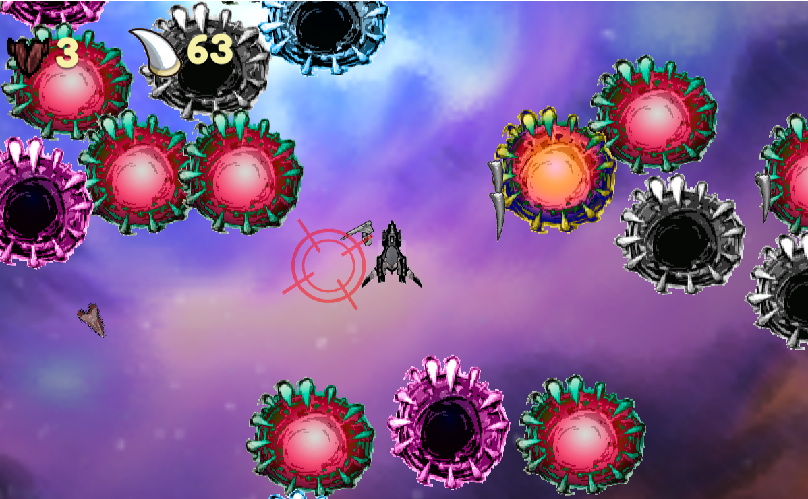

Descripción del proyecto
Este juego es un Un shooter en 2D de vista Top Down, donde varios animales o monstruos con colmillos persiguen al jugador y por cada enemigo que elimine el jugador, este gana un colmillo. Los colmillos serían los puntos.

Este juego es un Un shooter en 2D de vista Top Down, donde varios animales o monstruos con colmillos persiguen al jugador y por cada enemigo que elimine el jugador, este gana un colmillo. Los colmillos serían los puntos.
Este es un prototipo para la clase de prototipos, en la cual se usó la temática game a week, que como su nombre lo dice, constaba de realizar un juego por semana con temáticas diferentes. El tema de esta semana, para este proyecto fue colmillo. Yo me encargué de absolutamente toda la parte de programación del jugador, del deiseño de nivel, del diseño de UI, de las animaciones, la inteligencia artifical de los enemigos y de la música del juego.